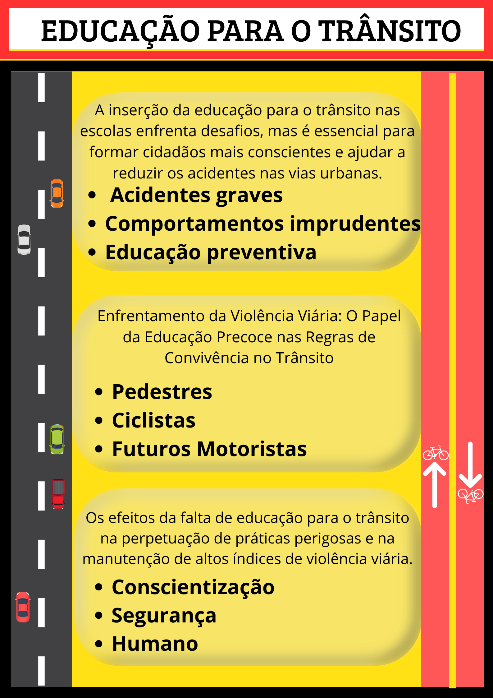

Voltar
Voltar
Educação no Trânsito

A educação no trânsito é um elemento chave para a construção de uma mobilidade mais segura, responsável e humana. Em um cenário onde acidentes e imprudências ainda causam milhares de vítimas todos os anos, conscientizar condutores, pedestres e ciclistas sobre seus deveres e direitos é essencial para salvar vidas e promover a convivência harmoniosa nas vias públicas.
Desde os primeiros anos de formação, é importante cultivar atitudes de respeito às regras, empatia no trânsito e atenção ao coletivo. A segurança viária não depende apenas da fiscalização, mas, sobretudo, da responsabilidade individual e da compreensão de que cada ato no trânsito tem impacto direto na vida de outras pessoas.